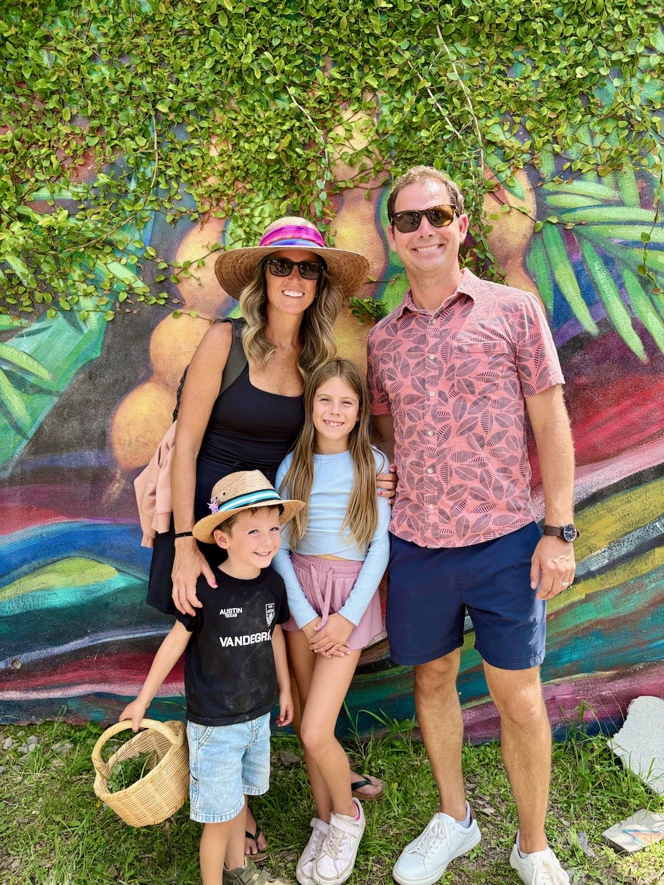
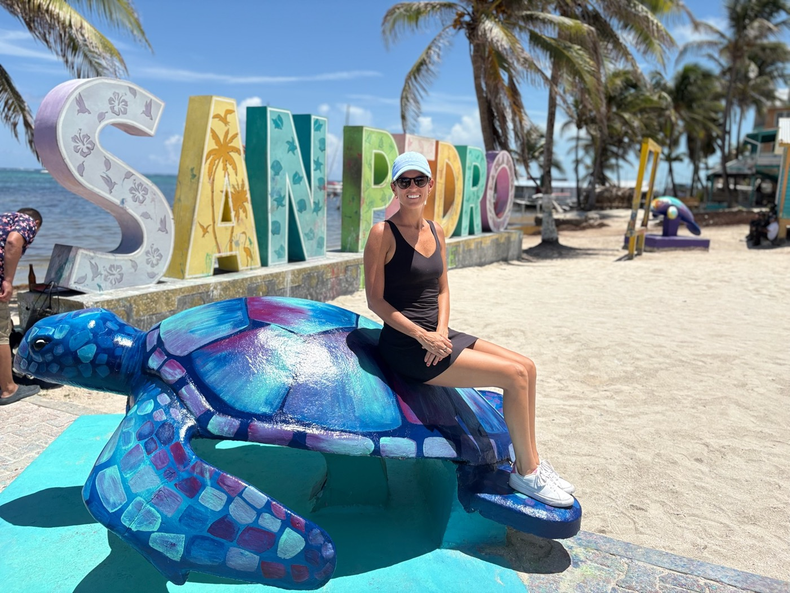
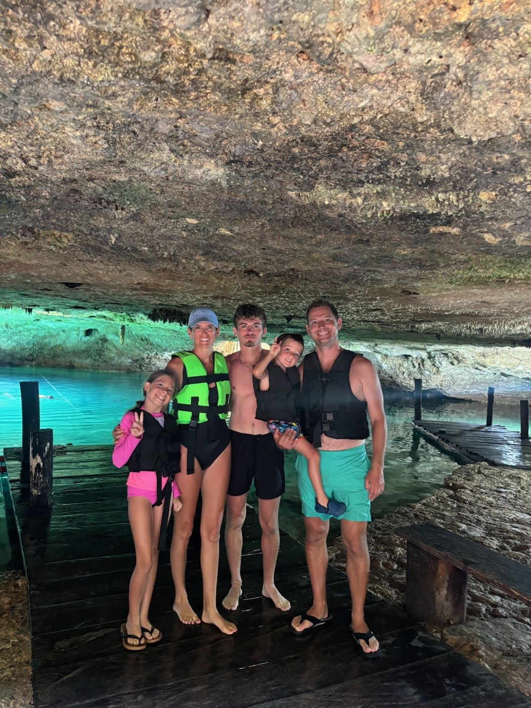

Some people are naturally good at making things happen.
They’re the friend who finds the flight deal, remembers the long weekend on the school calendar, knows about the new place to take the kids and somehow manages to get the whole family out the door before everyone loses interest.
Salissa Erickson is one of those people.
A former corporate executive assistant leader with more than 20 years of experience in events, administration and managing complicated logistics, Salissa spent years professionally juggling schedules, people, travel and countless moving pieces. These days, she’s putting many of those same skills to work closer to home as a mom of three—ages 19, nine and four.
And the results are pretty inspiring.
Her family has traveled throughout places like the Dominican Republic, Mexico and Belize, experimented with worldschooling, found creative ways to make longer trips more affordable and, just as importantly, made a habit of getting out and experiencing what’s right here in Central Texas.
But talk to Salissa for a few minutes and you realize she doesn’t approach any of it with a color-coded, every-minute-accounted-for philosophy.
In fact, her advice is almost the opposite.
Start with 10 minutes. Let the kids weigh in. Look for what everyone actually enjoys. Be flexible about the destination. Spend money on what matters to your family. And remember that an adventure doesn’t have to involve a passport—or even leaving Austin.
I recently sat down with Salissa on the Pull Up a Chair podcast to talk about how she makes it all happen. Here are some of my favorite takeaways from our conversation.
First things first: Why Steiner?
Salissa grew up in Austin and had lived near the Steiner area before she and her husband, Cris, started deciding where they wanted to raise their family.
The combination of schools, outdoor access, the lake and trails ultimately won them over.
“We just love the area, the lake, the trails, just the vibe of this area,” she says.
For a family that would rather be outside than sitting at home, it made sense. Even with the drive into central Austin, she says the trade-off has been worth it.
And that active lifestyle plays a big part in the way she plans both their weekends and their travels.

With kids ages 19, nine and four, how do you plan something everyone will enjoy?
This might have been the question I was most curious about.
Planning a trip for one age group is hard enough. Planning one that appeals to a preschooler, an elementary-schooler and a 19-year-old feels borderline impossible.
Salissa starts by looking for common ground.
“What are the common themes that we all enjoy?” she says. “We all enjoy being outdoors. We all enjoy a lot of activity. So those are typically where I start.”
From there, she looks for opportunities to give individual family members something that feels specifically theirs.
Maybe one child has an activity they’re excited about. Maybe the family splits up for part of a day. Maybe the teenager gets more say in one portion of the itinerary.
Most importantly, the kids are included before the trip ever happens.
Salissa will sit everyone down and ask: Is there something you want to see? Something you want to do? Something you’re interested in learning?
It’s a simple shift, but an important one.
Nobody wants to spend a small fortune on a family vacation only to drag reluctant kids from activity to activity.
Giving them some ownership before you go creates buy-in—and anticipation.
Don’t plan the entire year. Think in seasons.
If you’ve ever opened the school calendar, stared at every holiday and three-day weekend for the next 12 months and immediately felt overwhelmed, Salissa has a suggestion:
Stop trying to plan the whole year.
She thinks quarterly instead.
“I kind of do, like, quarterly,” she says. “For me, if I were to do a year, it’d be way too overwhelming.”
She starts with the season. What would be especially fun in the fall? Where makes sense during spring? Is there somewhere that’s perfect in summer?
Then she looks at school holidays, work schedules and how many days the kids could reasonably miss.
Breaking the year into smaller pieces turns a giant blank calendar into a much more manageable question: What could we do over the next few months?
Decide what your family values—and let that guide the budget.
Travel is clearly a priority for the Ericksons, but Salissa is quick to point out that prioritizing one thing usually means saying no to something else.
There are house projects they have postponed because they would rather put that money toward experiences. When Cris considered a new job, flexibility and the ability to work remotely mattered because of how they wanted their family to live.
That doesn’t mean every family needs to make the same choice.
The more useful question is: What matters enough to us that we’re willing to choose it over something else?
For Salissa, the return on that investment is the shared memory.
She didn’t grow up taking many vacations herself, so creating those experiences for her children has become particularly meaningful. And now that her oldest is 19, she can already see the effect.
He still wants to join family trips when his schedule allows—and has started suggesting adventures of his own.
Want to travel more affordably? Be flexible about where you go.
One of the biggest misconceptions Salissa encounters is that her family must spend an enormous amount of money to travel as often as they do.
Her strategy is less about finding a secret source of unlimited travel money and more about approaching the process backwards.
Instead of always saying, We want to go to this exact destination on these exact dates, they often look at what’s affordable first.
What flights are unusually inexpensive? Where is it shoulder season? Where can they visit when the weather is still good but demand is lower?
“If you’re more flexible … the price can go down,” she explains.
She watches airfare through tools like Google Flights and flight-deal alerts. One particularly memorable deal led Salissa and Cris to Tahiti for an adults-only trip, with round-trip airfare around $700.
And sometimes, the deal determines the destination.
There’s something freeing about that idea: Your next vacation doesn’t necessarily have to start with a bucket list. It can start with an opportunity.

Think beyond hotels and vacation rentals.
Salissa also introduced me to a travel option I hadn’t seriously considered before: home exchanges.
Her family has used home-exchange platforms several times, either trading homes directly with another family or earning points by hosting someone and using those points toward a different stay.
Eliminating or dramatically reducing lodging expenses has allowed them to stay places longer and redirect that part of the budget toward experiences once they arrive.
For a family of five, where hotel rooms can become complicated and expensive quickly, it can make a major difference.
Her larger point applies beyond home exchanges: Don’t assume the standard way is the only way.
Flights, lodging, timing and activities all have variables. The more variables you’re willing to play with, the more possibilities you create.
Salissa’s cheat sheet
Three tools she actually uses, in her own words.
Going (formerly Scott’s Cheap Flights)
Best for: Cheap-flight alerts and mistake fares.
How it works: Choose your U.S. departure airports. Going monitors airfare and sends alerts when it finds unusually low fares. Premium currently includes domestic and international economy deals and custom destination alerts for $49/year.
How to use it: Add your home airport plus nearby airports you would realistically drive to. When an alert arrives, check dates, baggage rules and the airline before booking.
Tip: Be flexible on destination and dates. The biggest savings often come when you let the deal inspire the trip.
HomeExchange
Best for: Saving on hotels and vacation rentals.
How it works: Create a home listing and exchange homes either reciprocally or through GuestPoints. Current membership is $235/year for unlimited exchanges for 12 months; the platform lists 550,000+ homes in 155 countries.
How to use it: List your home, build a strong profile, search your destination and message hosts. With GuestPoints, you can host someone in your home and use the points for a stay somewhere else.
Tip: Search early and look beyond major tourist centers for better availability and value.
The Flight Deal
Best for: Free, no-frills airfare deals.
How it works: Follow its flight-deal posts for discounted round-trip fares from major U.S. cities and other departure markets. Listings include international and domestic sales with sample dates and fare details.
How to use it: Check the site regularly, compare the posted fare with the airline directly and act quickly when the dates work for you.
Tip: It’s especially useful when you’re flexible about where you fly from and where you go.
No time to plan? Give it 10 minutes.
This may have been my favorite piece of advice from the entire conversation because it removes one of my personal roadblocks to travel planning.
I tend to think, I need two uninterrupted hours to research this.
Salissa says you don’t.
When she was working full time, much of her planning happened after the kids went to bed—in tiny increments.
“Whether it’s 30 minutes, 10 minutes … maybe just writing down, ‘Here’s somewhere I’d like to go,’” she says.
That’s it.
Day one might simply be a destination.
Another day, add one activity.
Later, look at flights.
Create a shared note and invite your spouse and kids to add things that interest them.
Ten minutes doesn’t feel like planning a vacation. But enough 10-minute sessions eventually become one.
And as Salissa points out, once you begin, excitement tends to build momentum.
What if your spouse isn’t as excited about travel as you are?
Don’t start by trying to convince them to love your version of a vacation.
Start with theirs.
Cris loves skiing. Salissa does not particularly love skiing—or cold weather. But especially early in their relationship, she was willing to take ski trips because they mattered to him.
Then they could meet somewhere in the middle on the next trip.
For someone who isn’t naturally enthusiastic about travel, she recommends focusing less on the trip and more on what it creates.
“What’s the value it’s bringing, whether it’s just the two of you or the family?” she says.
Maybe that value is uninterrupted time together. Maybe it’s seeing the kids experience something new. Maybe it’s creating a memory everyone will talk about for years.
The destination is really just the setting.
And if money is the sticking point? Create a travel fund.
A $10,000 vacation can feel impossible.
Putting aside a manageable amount each month feels very different.
Salissa recommends working toward bigger experiences gradually rather than trying to absorb the cost all at once. If a major trip takes a year or a year and a half to save for, that’s okay.
You can even get the kids involved.
Older children can contribute some allowance or earnings toward an activity they really want to do, and everyone can have a predetermined souvenir or spending budget.
Suddenly travel planning becomes a lesson in choices, saving and budgeting too.
Which led us to another realization during our conversation: The planning itself can be part of the family experience.
The kids are researching. They’re prioritizing. They’re learning what things cost. They’re contributing ideas.
The vacation starts long before the plane takes off.
What exactly is worldschooling?
For the Ericksons, one of those family experiments has been worldschooling.
Broadly, it combines travel with educational experiences outside a traditional classroom. Programs vary widely: Some are academically structured, while others focus more on nature, culture or specific hands-on subjects.
Salissa spent about two years researching the concept through online communities before her family finally tried a program during the summer.
“It was an amazing experience,” she says.
It wasn’t identical to what they had pictured—and she doesn’t envision pulling the kids from school to become a permanently nomadic family—but they loved it enough that she sees worldschooling becoming an occasional addition to their life.
The appeal is not simply doing school somewhere prettier.
It’s meeting people from different places, experiencing another culture and giving the kids opportunities for the kind of hands-on learning that can be difficult to replicate in a classroom.

Not every adventure has to be far from home.
Perhaps the most Porch Project-worthy part of Salissa’s approach is that she applies the same philosophy to an ordinary weekend.
Her family loves the Austin Nature & Science Center and Cedar Park Public Library, which she describes as almost a mini Thinkery, with sensory activities, space for kids to play and outdoor areas.
For adults-only time, she and Cris gravitate toward comedy shows, live music and concerts.
And when they’re staying close to home in Steiner, life gets even simpler: hiking the trails, walking the dog, biking, paddleboarding and spending time near the water.
It can be surprisingly difficult to leave your neighborhood for a few hours when laundry, errands and house projects are competing for attention.
Salissa’s experience has convinced her it’s usually worth doing anyway.
“The laundry will get done,” I said during our conversation.
Her answer?
“You never regret it.”
That idea stuck with me.
Because although our conversation started out being about how one person manages to plan these incredible family trips, I realized by the end that it wasn’t really about travel.
It was about making room for experiences before life fills the space for you.
Salissa told me about a recent morning when her four-year-old, Liam, was getting ready for school and asked if they were going to the library.
No, she told him. Today was a school day.
“But I want the fun day,” he answered—the kind of day they’d had so many of over the summer, when they went somewhere and did something together.
Those are the moments all the planning is actually for.
Not the perfect itinerary. Not checking another destination off a list. Not keeping children happily entertained every second.
The memory that somewhere along the way, you had the fun day.
The lightning round
Fast answers, Steiner edition.
- Summer trail strategy
- Hike after dark, dog and kids in tow.
- Newest obsession
- Pilates Addiction, right here in Steiner.
- Austin with the kids
- Austin Nature & Science Center, or the Cedar Park Public Library.
- Austin without them
- Cap City Comedy, or anything at Moody Amphitheater.
- Most surprising house rule
- No TVs. Two weeks in and holding.
- Trip she’d do again tomorrow
- Bora Bora for the water. San Miguel de Allende for the color.
- Next stamp
- Guatemala or Costa Rica, winter break.
- $500 and a free Saturday
- Georgetown Square on a market day—vendors, shops, lunch and a massage at one of the little spas. Thirty-five minutes from here.
The Porch Project takeaway
If planning more experiences with your family has been sitting somewhere on your mental we should really do that list, Salissa’s advice is refreshingly simple:
Start with 10 minutes.
Write down one place you want to go. Ask your kids what they want to do. Look at the next school break instead of the entire year. Start a travel fund. Sign up for a flight alert. Or forget travel altogether and pick one place around Austin you haven’t explored yet.
You don’t need to become a master planner.
You just have to make the first plan.
And maybe that’s how a regular Saturday eventually becomes one of the days your kids remember.